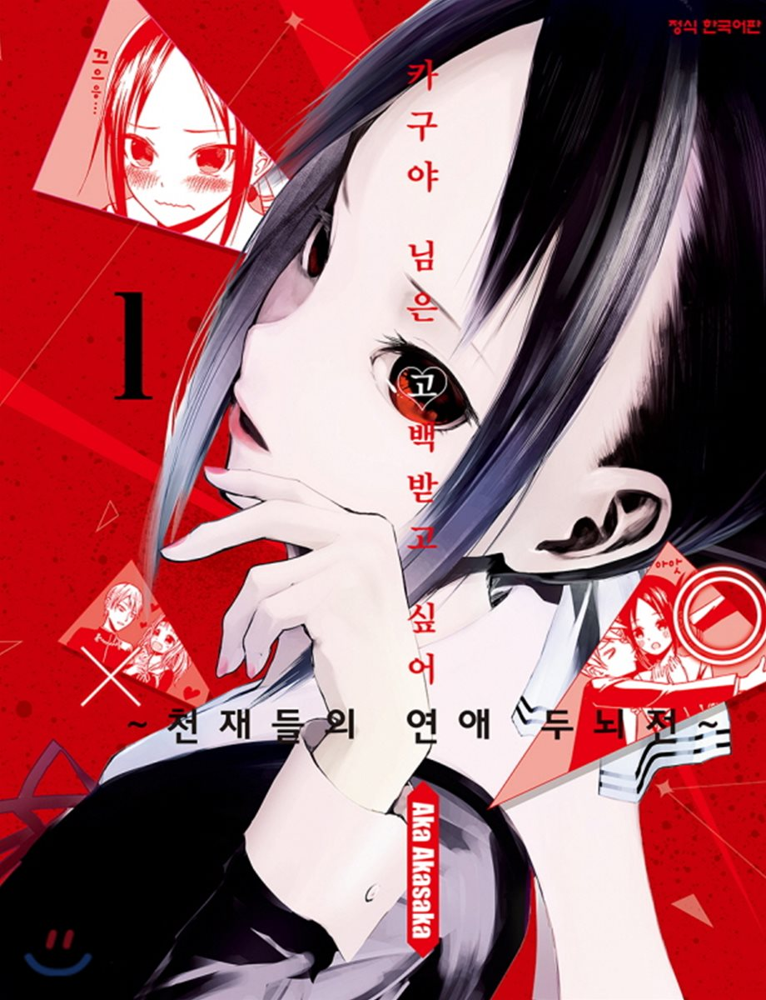

카구야 님은 고백받고 싶어 ~천재들의 연애 두뇌전~의 주인공. 슈치인 학원 고등부 학생회 부회장. 또한 일본 4대 재벌 중 하나이자 1000여개의 계열사를 거느린 대재벌 시노미야 그룹 총수 시노미야 간안의 고명딸이다. 2학년 A반. 궁도부 소속. 생일은 1월 1일, 혈액형은 AB형.
원래 얼음 공주 시절에는 머리를 풀고 다녔으나 현재는 빨간 리본으로 머리를 올려 묶고 다닌다. 특별편에서는 묶는 방법이 나온 적도 있다. 애니에서는 묶고 남은 부분(?)에 바보털 속성까지 붙었다. 또한 강조되지는 않지만 이마가 광활한 편. 하야사카 아이와 함께 작중 공인의 미소녀. 외모에 더해서 부잣집 아가씨답게 행동 하나하나에서 묻어나오는 기품이 있어서 전교생의 동경을 받고 있다. 다만 매우 납작한 절벽가슴으로 본인도 신경 쓰고 있으며, 그래서 거유인 후지와라 치카에게 항상 열등감을 느끼는 중. Q&A를 통해 독자들에게서 정확한 사이즈에 대한 질문이 꾸준히 들어오고 있지만 작가는 카구야가 불쌍하다며 확답을 피하고 있다...빈유인 대신에 날씬한 허리와 골반이 강조되는 캐릭터.